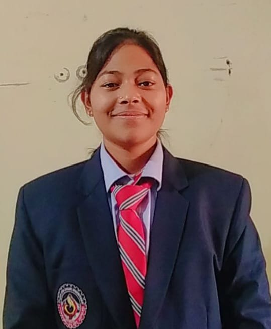

Hello! I am Tanuja Negi. I am a passionate web developer and a lifelong learner with a strong ambition to become a successful engineer. My journey began with a curiosity about how websites work, which led me to explore both front-end and back-end technologies. I enjoy creating responsive, user-friendly applications that solve real-world problems. Embracing new technologies keeps me motivated, fuels my creativity, and inspires me to build innovative projects that drive personal and professional growth.
